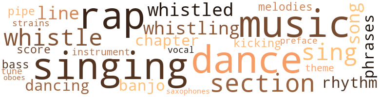
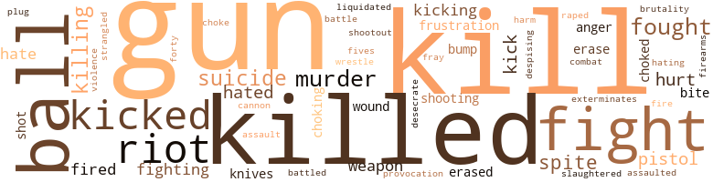
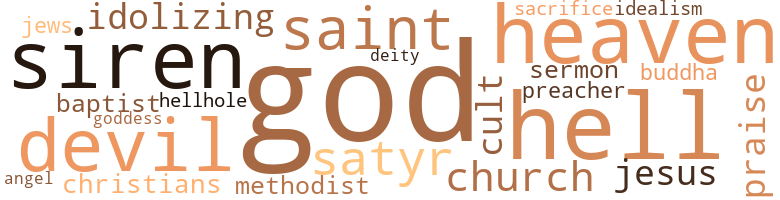

Vulture (The), by Scott-Heron, Gil (1970)
83 music-related terms matched in this text.
Most frequent terms in this topic: singing (9); music (9); dance (8); rap (7); section (4)
banjo.n.01
Definition: a stringed instrument of the guitar family that has long neck and circular body
| word | sentence |
|---|---|
| banjo | I was in Ken - tucky with a banjo on my knee . |
| banjo | No banjo . |
bass.n.07
Definition: the member with the lowest range of a family of musical instruments
| word | sentence |
|---|---|
| bass | Now back inside my head the weekend man that gets in my bottle when I drink ham - mered away at the bass drum and said : " But who would be - lieve that only minutes ago you were listening to the Mets game in Saint Louis , where they were playing a twi-night double-header ? |
chapter.n.01
Definition: a subdivision of a written work; usually numbered and titled
| word | sentence |
|---|---|
| chapter | I figured if I was going to get myself together to dance once or twice , best I not feel like the last chapter of what 's the use . |
| chapter | He had been trying to start a chapter of this organization he belonged to in the Chelsea area . |
dance.n.01
Definition: an artistic form of nonverbal communication
| word | sentence |
|---|---|
| dances | There were the older cats playing ball and girls playing records and doing various dances . |
| dance | Maybe there was a dance in Chelsea . |
| dance | That was when the knives , razors , and guns turned up on the weekend and people started searching you at the door when you came to a dance . |
| dance | It began as a cultural organization where black dance groups did African numbers and guest speakers came in . |
| dance | My pride was ruined because I was supposed to dance a victory dance after breaking down all of the girl 's defenses ; but all I had was , at best , more empty , pointless exploitation . |
dance.v.02
Definition: move in a pattern; usually to musical accompaniment; do or perform a dance
| word | sentence |
|---|---|
| dancing | The sister I was dancing with said something that I did n't catch . |
dance.v.03
Definition: skip, leap, or move up and down or sideways
| word | sentence |
|---|---|
| dance | When I 'm well I 'm gon na dance with Faye down at their club . |
| dance | I figured if I was going to get myself together to dance once or twice , best I not feel like the last chapter of what 's the use . |
| dancing | She stopped dancing . |
| dance | She had turned down a brother 's invitation to dance while I was pouring my drink . |
| dance | My pride was ruined because I was supposed to dance a victory dance after breaking down all of the girl 's defenses ; but all I had was , at best , more empty , pointless exploitation . |
foreword.n.01
Definition: a short introductory essay preceding the text of a book
| word | sentence |
|---|---|
| preface | PLASTIC PATTERN PEOPLE ( preface to a poem ) like , will you come back to the real ? |
kick.v.04
Definition: kick a leg up
| word | sentence |
|---|---|
| kicking | At that time anybody who was anybody was falling off a corner and kicking so much ass that nobody could keep score . |
music.n.01
Definition: an artistic form of auditory communication incorporating instrumental or vocal tones in a structured and continuous manner
| word | sentence |
|---|---|
| music | Eddie Palmieri and Joe Bataan were the music heroes of the neighborhood . |
| music | I guess that 's why they wore their hair long and had freak-out sessions with psychedelic music . |
| music | The music and the gambling that the P.R. people dig so much was off and running . |
| music | Black history , black literature , Swahili , and African music will be taught . |
| music | The music was nice in the back of the Lee apartment . |
| music | . . . climb the stairs to : soul music and soul food and lost souls in Harlem - no longer even singing about heaven . |
| music | would you like to survive on sadness/call on , Ella and Jose Happiness / drift with Smoky/Bill Medley/Bobby Taylor / Otis/soul music where frustrations are washed by drums - come , Nina and Miriam - congo/mongo beat me senseless bongo/tonto - flash through dream worlds of STP and LSD . |
| music | SpEeD kllLs and some - / - times music 's call to the Black is confused , our speed is our life pace/not safe/not good , i beg you to escape and live and hear all of the real , to survive in a sincere second of self-self until a call corrfes for you to cry elsewhere . |
| music | " Can I put on some music ? " |
musical_instrument.n.01
Definition: any of various devices or contrivances that can be used to produce musical tones or sounds
| word | sentence |
|---|---|
| instrument | Right before your very eyes , this beauty , pale as snow , will be ripped to shreds by that incredible instrument that you women are feasting your eyes on between our specimen 's legs . |
oboe.n.01
Definition: a slender double-reed instrument; a woodwind with a conical bore and a double-reed mouthpiece
| word | sentence |
|---|---|
| oboes | the third world arrives with Yusef Lateef and Pharaoh Sanders with oboes straining to touch the core of your unknown soul . |
phrase.n.02
Definition: a short musical passage
| word | sentence |
|---|---|
| phrases | I felt even more unreal and false when later in the eve-ning I made a play for this chick from down south and caught myself pretending to be drunk and filling my mouth with all the hip phrases and colloquialisms that I knew of . |
| phrases | Then to leave pictures and phrases de - picting more beauty in the world than could be noticed when you were born . |
pipe.n.04
Definition: a tubular wind instrument
| word | sentence |
|---|---|
| pipe | My father and I grinned , and he leaned back and lit up his pipe . |
rap.n.05
Definition: genre of African-American music of the 1980s and 1990s in which rhyming lyrics are chanted to a musical accompaniment; several forms of rap have emerged
| word | sentence |
|---|---|
| rap | They could rap a whole book while I hung back trying to translate the first word they had flown over . |
| raps | If it was as dark as I figured it would be , all raps would be the same . |
| Rap | " And you talk about Rap and Stokely , is this right ? " |
| rap | " An ' my rap ain ' that good ? " |
| rap | People rap about reaping the harvest of the earth by gaining friendship , and set out as best they can so that they may count up their friends like S & H green stamps at the end of the day . |
| rap | There were often evenings when I came through the door at Harvey 's near the witching hour and saw Smoky rap - ping with the women who frequented the place in the late evening . |
| rap | Whereas I was a bit picky , he would rap to the girl that I paid least attention to . |
| rap | the secon ' thing iz that they alwaze thinkin ' ' bout tomorrow even if t ' night iz mo ' important , they ezier an ' mo ' quick to the sack if they think the cat iz ejucated an ' got a I ' il money , they know they takin ' a chance they never see ' im agin , but they need a l'il romance an ' all that shit they read ' bout in the movie magazines , they wan na be wined an ' dined , but a cupa coffee an ' a charmin ' rap will do jus ' as good . " |
| rap | His hands were waving in the air , and his eyes took on the deep con - centration of a man who 's really enjoying his own rap . |
rhythm.n.04
Definition: the arrangement of spoken words alternating stressed and unstressed elements
| word | sentence |
|---|---|
| rhythm | The whites , be - cause they have never had any feeling for warmth and rhythm and are basically , sexually , frigid . |
| rhythm | Our chests flattened against each other , and I could hear through my own body her rapid heartbeat as we began to match our rhythm and response . |
sax.n.02
Definition: a single-reed woodwind with a conical bore
| word | sentence |
|---|---|
| saxophones | ( Enter John ) blow from under always and never so that the morning ( THE SUN ) may shout of brain-bending saxophones . |
score.n.02
Definition: a written form of a musical composition; parts for different instruments appear on separate staves on large pages
| word | sentence |
|---|---|
| score | We go into the top of the fifth with the score : The New York Mets one and the Saint Louis Cardinals nothing . |
section.n.01
Definition: a self-contained part of a larger composition (written or musical)
| word | sentence |
|---|---|
| section | Crystal 's little brother , Mack , was sitting at his moth - er 's feet playing with a section of an electric train . |
| section | It looked as though he had reserved a section . |
| section | " In other words , you condone a section of the education we receive from white people ? " |
| section | In accordance with the Act of April 16 , 1907 , P.L. 62 , as amended by the Act of July 12 , 1935 , P.L. 710 , 16 P.S. Sec. 9521 , and on section 503 of the Vital Sta - tistics Act of June 29 , 1953 , P.L. 304 , 35 P.S. sec. 450 , 503,1 hereby request that an autopsy be performed on the body of . |
sing.v.02
Definition: produce tones with the voice
| word | sentence |
|---|---|
| singing | She was singing " Do-Right Woman , " and for a second I thought I heard Isidro 's voice . |
| singing | That stuff was for the hippie poets and folk singers who liked to go around singing the blues and talk - ing about the total destruction of mankind and all that wild shit . |
| sing | I wanted to sleep , but his sing - ing kept me awake . |
| sing | I looked up while lying flat on my back , and heard the wind whisper to me and the concert of the animals , un - leashed and feeling free to sing now that most of the in - truders had vanished into yet another wilderness . |
| sing | Forty nights and forty days Shall we sing the zebra 's praise . |
| singing | . . . climb the stairs to : soul music and soul food and lost souls in Harlem - no longer even singing about heaven . |
| sing | Ricky would come by my house , laugh , sing , and write epitaphs for him - self in my notebooks . |
| singing | In the distance , Derek Martin was singing a song called " You 'd Better Go , " and an angel soprano accompanied him , telling him that his time had run out , but he kept on rapping strong . |
singing.n.01
Definition: the act of singing vocal music
| word | sentence |
|---|---|
| singing | I was half-lying back on the couch , and I could hear Ricky singing in the kitchen . |
| singing | . . . Just as I ca n't see myself burning in hell throughout eternity , I ca n't see myself kneeling at the feet of an Al - mighty God and singing of his glory . " |
| singing | For a minute I wanted to look outside in the middle of the flick and see if I could catch a glimpse of Judy Garland and L. Frank Baum skipping down a yellow-brick replica of Ninth Avenue with singing junkies instead of Munchkins . |
| singing | Their singing had ceased , along with their ges - tures toward me . |
| singing | I could hear her hum - ming and singing the blues rendition as I wiped the remain - ing foam from my face . |
song.n.01
Definition: a short musical composition with words
| word | sentence |
|---|---|
| song | Our bodies began to touch , rhythmically , more firmly with each beat of the song . |
| song | The song was coming to its climax , Smoky begging and pleading for the woman to give him that chance he needed . |
| song | In the distance , Derek Martin was singing a song called " You 'd Better Go , " and an angel soprano accompanied him , telling him that his time had run out , but he kept on rapping strong . |
theme.n.03
Definition: (music) melodic subject of a musical composition
| word | sentence |
|---|---|
| theme | I knew that at best it was only a variation on a theme she probably knew by heart . |
tune.n.01
Definition: a succession of notes forming a distinctive sequence
| word | sentence |
|---|---|
| line | His program is so together that not only is he getting the leg that he 's after , but stuff that he did n't even know he was in line for . |
| line | " Was Lee shootin ' dope main line ? " |
| melodies | They convinced themselves when they got high that the message in their poems and flimsy melodies were the true salvation of civilization . |
| line | " I rilly ain ' gon ' han ' you no line , cauz you know sometimes I jus ' ain ' got the energy to git all hooked up wit ' no tale about all this wil ' shit . |
| strains | Add on Alice Coltrane and her cosmic strains , still no vocal on blue-black horizons/your plasticity is tested by a formless assault : THE SUN can answer questions in tune to sacrificial silence/but why will our new jazz age give us no more expanding puzzles ? |
| tune | Add on Alice Coltrane and her cosmic strains , still no vocal on blue-black horizons/your plasticity is tested by a formless assault : THE SUN can answer questions in tune to sacrificial silence/but why will our new jazz age give us no more expanding puzzles ? |
vocal_music.n.01
Definition: music intended to be performed by one or more singers, usually with instrumental accompaniment
| word | sentence |
|---|---|
| vocal | Add on Alice Coltrane and her cosmic strains , still no vocal on blue-black horizons/your plasticity is tested by a formless assault : THE SUN can answer questions in tune to sacrificial silence/but why will our new jazz age give us no more expanding puzzles ? |
whistle.n.01
Definition: the sound made by something moving rapidly or by steam coming out of a small aperture
| word | sentence |
|---|---|
| whistles | Life whistles by us . |
whistle.v.01
Definition: make whistling sounds
| word | sentence |
|---|---|
| whistling | Then they loaded their cargo into the van , and within seconds they were whistling down the block toward Eighth Avenue . |
| whistling | Debbie was whistling something . |
| whistle | His language was a combination of street slang and high-school intellect that he seemed to whistle through a LeRoi Jones beard . |
| whistled | I whistled out loud . |
| whistling | As you approach 17th Street on Eighth Avenue you pass the pizza shop , the staple company that went out of business , other abandoned storefronts , a grimy brownstone , and a corner group who stand in the same spot every eve - ning whistling at the secretaries who would n't spit on them . |
| whistled | There was the solitude of sharing the bathroom with the families down the hall and sitting on the toilet with your ass out while the Hawk whistled through the cracks in the wall and turned your balls to ice . |
| whistle | He was clean as a whistle , as usual . |
| whistle | " Clean as a whistle . " |
| whistled | " ain ' nothin ' persnal ' bout nothin ' , " Smoky whistled through his beard . |
234 violence-related terms matched in this text.
Most frequent terms in this topic: gun (30); kill (28); killed (23); fight (8); kicked (8)
affray.n.02
Definition: a noisy fight
| word | sentence |
|---|---|
| fray | I stood in the Baltimore bus terminal watching the be - ginning of the fray near the other side of heaven . |
aggravation.n.02
Definition: unfriendly behavior that causes anger or resentment
| word | sentence |
|---|---|
| provocation | There had always been a smile on his lips and a chuckle rolling over his vocal cords , ready to be exposed with only the slightest provocation . |
anger.n.01
Definition: a strong emotion; a feeling that is oriented toward some real or supposed grievance
| word | sentence |
|---|---|
| anger | Her anger faded and then rekindled . |
| anger | There was neither anger nor disappointment in her eyes . |
assail.v.01
Definition: attack someone physically or emotionally
| word | sentence |
|---|---|
| assaulted | The warm air assaulted me after my sit in the air-conditioned coolness of the bus . |
battle.v.01
Definition: battle or contend against in or as if in a battle
| word | sentence |
|---|---|
| battled | The only audible sound was the clicking of the fan as it battled to get a breeze together for the perspiring officers . |
| battle | There was a small fan directly behind them spinning furiously in an effort to battle the ninety - degree New York day . |
| combat | They came out with more ideas about how we as a people may better combat the system . |
bump.n.01
Definition: a lump on the body caused by a blow
| word | sentence |
|---|---|
| bump | The scene reminded me of Coney Island and the bump cars that you get into and try to knock each other to hell . |
| bump | They had flown and taken up new perches on the wires that connected the electric mesh with the bump - ' um clouds . |
butcher.v.01
Definition: kill (animals) usually for food consumption
| word | sentence |
|---|---|
| slaughtered | One by one the men who stood up for black freedom in this country were being slaughtered , and the only answer was " Be cool " ? |
cannon.n.04
Definition: heavy automatic gun fired from an airplane
| word | sentence |
|---|---|
| cannon | My right hand shot out with cannon force and slapped the girl into a sitting position halfway across the room . |
contemn.v.01
Definition: look down on with disdain
| word | sentence |
|---|---|
| despising | The wise man who can not command his passions , who fears not want , nor death , nor chains , firmly resisting his appetites and despising the honors of the world , who relies wholly on himself , whose angular points of character have all been rounded off and polished . " |
desecrate.v.01
Definition: violate the sacred character of a place or language
| word | sentence |
|---|---|
| desecrate | I think that at the next board meeting he 'll be castrated and his family jewels set in bronze as a lesson to all those who would dare desecrate the privilege of an afternoon alone with you , disconnected from all the mores and folkways that bind us . " |
erase.v.01
Definition: remove from memory or existence
| word | sentence |
|---|---|
| erased | Delores met me at the door and ushered me through to the living room with a smile that I quickly erased . |
| erase | " Keep coming and coming because I love you , knowing that all you want to do is sleep with me and then erase me from your mind ? " |
| erase | " I ca n't erase you from my mind . " |
| erased | The youth was gone , and he looked like an old man , freshness erased by some unknown black - board cleaner . |
exterminate.v.01
Definition: kill en masse; kill on a large scale; kill many
| word | sentence |
|---|---|
| exterminates | This way , they relate to each other in all phases of existence , and this exterminates the mystery that was once involved with romance and the word " love " itself . |
ferociousness.n.01
Definition: the trait of extreme cruelty
| word | sentence |
|---|---|
| brutality | " Now , " I continued , " when we say police brutality and racist police force , just what , exactly , are we saying ? |
fight.n.02
Definition: the act of fighting; any contest or struggle
| word | sentence |
|---|---|
| Fighting | Fighting on the side of the Union Army to do in the master that he re - putedly loved so dearly ? |
| fighting | Those only are worth having which come as a result of hard fighting , " I.Q. said . |
fight.n.05
Definition: a boxing or wrestling match
| word | sentence |
|---|---|
| fights | I had seen the chicken fights in the park on 17th Street . |
| fights | The big gang fights had been often and bloody , but rarely fatal . |
| fight | The cops would beat us and say that we died in the gang fight . |
| fight | From the time of Rome and Greece , and probably further back , man had been fight - ing and killing for what he believed in . |
| fight | They had a little fight of some kind . |
fight.v.02
Definition: fight against or resist strongly
| word | sentence |
|---|---|
| fighting | From the high-rise apartments that faced 17th be - tween Ninth and Tenth avenues , there were still millions of lights hanging in the windows , fighting to aid the street - lights illuminate the corners and save travelers from mug - gers . |
| fought | It was always Spade and Eddie Shannon who fought for control . |
| fight | We did n't fight . |
| fought | I was n't a gang member , and I fought anybody I had to . |
| fight | If two and a half million Jews can demand their freedom and hold enough check to scare the hell out of the rest of the world , surely twenty-two million or more black Americans can fight for their rights . |
| fight | My man Hicks , the leader of the Berets , was on his knees trying to fight off an attacker . |
| fought | The thirteen States fought off the British Army . |
| fight | All of the brothers in Africa had had to fight bitter battles against the devil 's Imperialism . |
| fight | They might always fight . |
| fought | The dim lights flickered at the bottom of the stairs , and the smoke fought its way across the ceiling . |
| fought | The eternal longing in their eyes was for some man to make a positive effort to seduce them , so that they could momentarily imagine themselves in love and discredit the evil thought that their actions were only the timeless , rhythmic movements of a woman in heat , a woman being destroyed from within because her physical needs fought the constant battle with her mind to control the countless caresses that she eventually would succumb to and the many orgasms that she desired . |
| fought | I began to touch her everywhere as our tongues fought each other . |
| fought | I could feel the onrushing end and fought it until it all but overcame me , and I sent the messengers of my virility hurtling through her body . |
firearm.n.01
Definition: a portable gun
| word | sentence |
|---|---|
| firearms | They claim they wear their firearms for protection . |
forty-five.n.01
Definition: a .45-caliber pistol
| word | sentence |
|---|---|
| forty-fives | The forty-fives were replaced by a few Latin jams . |
frustration.n.03
Definition: a feeling of annoyance at being hindered or criticized
| word | sentence |
|---|---|
| frustration | " I be - lieve the primary ingredient is frustration and not alcohol . |
| frustrations | would you like to survive on sadness/call on , Ella and Jose Happiness / drift with Smoky/Bill Medley/Bobby Taylor / Otis/soul music where frustrations are washed by drums - come , Nina and Miriam - congo/mongo beat me senseless bongo/tonto - flash through dream worlds of STP and LSD . |
gag.v.06
Definition: cause to retch or choke
| word | sentence |
|---|---|
| choke | " I 'm gon na grab you by yo ' neck and choke you till the blood comes through your teeth , an ' then Pm gon na drag you to the Man an ' swear you committed suicide . " |
| choking | I had every intention of taking the razor and choking the scrawny bastard until life was only a memory . |
| choked | The tense feeling that had choked at my bowels was releasing me to the warm womb of drowsiness and ease . |
| choked | " Looky ' ere , Buddy , " he choked . |
| choking | She only succeeded in damn near choking herself to death . |
gun.n.01
Definition: a weapon that discharges a missile at high velocity (especially from a metal tube or barrel)
| word | sentence |
|---|---|
| gun | What I got here is a .32-caliber automatic that you can jus ' think uv as a gun fo short . " |
| gun | Out of the corner of my eye I could see a short black with a process palming a gun , with the nose buried in Cooly 's back . |
| gun | Several of us who had n't heard the opening gun were caught in the rear of the pack . |
| gun | I 'm gon carry a gun from now on . |
| gun | " He started carryin ' a gun . ' |
| gun | I could feel the point of the gun jammed into my back . |
| gun | You should have come up on him with a gun . |
| gun | I was looking for a chance to grab the gun from him . |
| guns | That was when the knives , razors , and guns turned up on the weekend and people started searching you at the door when you came to a dance . |
| gun | Either the quick death from a gun or a rope , or the slow death of trying to survive under inhuman conditions . " |
| gun | Twice it seemed that the noise had been the gun 's greatest effect , but the third time Hicks had aimed at the body I had beaten into a pulpy mass . |
| gun | I threw the gun , which dangled from his limp fingers , over my head into the river . |
| guns | " I mean , do you really feel as though there is nothing else we can do but go out into the streets with guns strapped to our bodies as though we were living in the Old West and shoot everybody in sight ? " |
| guns | They carry guns and wear berets . |
| guns | " Of course that 's what the Panthers say they are wearing the guns for . |
| gun | In Watts a man was taking ' his wife to the hospital for the deliverance of their child , and the policeman claimed his gun accidentally went off . |
| gun | The gun is a hand-load Remington with a range of approximately fifty yards . |
| gun | That some - one had probably done it with my gun ! |
| gun | I reached for my gun and found instead only the six bullets . |
| gun | According to our reports , the gun it belonged to was sold by order to a Robert Miller , 169 West 113th Street . |
| gun | " If the bullet had n't been fired , how did you trace the gun ? " |
| gun | " The gun was found the next day in a trashcan on Eighth Avenue , " Mitchell said . |
| gun | A man from your block named Game ; and he ran it through a check or two and told me that it was definitely the gun that was used to kill Isidro . |
| gun | " What do you want for me to get the gun back ? " |
| gun | If I do n't see you before midnight , I 'm taking the gun to the cops , or I 'll see that they get it anonymously . " |
| gun | You should n't have kept the gun , I.Q . |
| gun | Seven hundred and fifty dollars for the gun . |
| gun | He had a gun . " |
| gun | Once when Seedy found out I wuz gon na rob ' im an ' started carryin ' a gun , an ' the other when you shot Seedy an ' all the P.R. 's thought it wuz either me or John Lee . " |
| gun | " Where 'd you get a gun ? " |
| gun | " I took I.Q. 's gun . |
| gun | I killed Seedy , and then I put the gun back in I.Q. 's room . |
| gun | " I.Q. 'll go to jail for me if the Man ever finds that gun ! " |
| gun | " he had a .32 inna paper bag wit ' de pills , he got ta be a stupid cat runnin ' aroun ' wit ' a unloaded gun inna paper bag . " |
gunfight.n.01
Definition: a fight involving shooting small arms with the intent to kill or frighten
| word | sentence |
|---|---|
| shootout | No longer was death a shootout in a cowboy movie or Christians being eaten alive in a Roman arena by toothless lions . |
hate.v.01
Definition: dislike intensely; feel antipathy or aversion towards
| word | sentence |
|---|---|
| hated | The old people hated him because he did n't have any manners , and his parents could n't control him . |
| hate | I knew that Mrs. Boone , our neighbor , must hate to see her coming . |
| hated | I hated her more than ever until I understood that she really loved him after all and wanted to see him out of his misery . |
| hated | Then I hated her for what she was without him . |
| hated | I hated the very sight of him . |
| hates | " My mother hates him and Hicks and boys like them . " |
| Hating | Hating everything so much that he would have to do that ! |
| hates | He hates your guts . |
injury.n.01
Definition: any physical damage to the body caused by violence or accident or fracture etc.
| word | sentence |
|---|---|
| hurt | " Do n't act hurt , Spade , " she said . |
| hurt | My eyes opened and then quickly closed as the hurt stabbed my head . |
| harm | If one throw salt at thee , thou wilt receive no harm , unless thou art raw . " |
kick.v.04
Definition: kick a leg up
| word | sentence |
|---|---|
| kicking | At that time anybody who was anybody was falling off a corner and kicking so much ass that nobody could keep score . |
kick_back.v.02
Definition: spring back, as from a forceful thrust
| word | sentence |
|---|---|
| kick | I sat there dreaming up a device with several size-twenty boots on a rotating wheel so that I could plug it in and kick my own ass . |
| kicked | The Met game was coming out of some window or other , and the Mets were getting their asses kicked again . |
| kicked | Somebody would get high and start cursing , and the next thing you knew , whole sections were being kicked out . |
| kicked | They were the ones with the whipped heads and the kicked asses . |
| kick | " Then I 'm gon na kick our ass instead of just yours , " I shouted . |
| kicking | January 4 , 1969 The Hawk was kicking much ass when I stepped out of Jose 's basement . |
| kicked | Immies kicked me in the ribs . |
| kicked | My mother got into a terrible thing when she saw me with my face all kicked in and my ribs crunched , but she was quiet long enough to prod for broken bones and patch me up as well as I would let her . |
| kicking | I told him that the pills had been bad and that I had gotten a bad ass kicking and no money . |
| kicked | Before I could even turn around , I was pushed or kicked and was plunging into the murk that lapped up around the decaying columns . |
| kicked | A man can have his ass kicked so often fig - uratively that he does n't care what happens to him literally '' . |
| kicked | My stand was that whiteys did n't need any help get - ting their heads kicked in , when , in fact , they were the target of my revolution and eventual cult . |
| kicks | It was no longer only supplying kicks , but quick deaths . |
| kicks | " I do n't mind my men getting their kicks . |
kill.v.10
Definition: cause the death of, without intention
| word | sentence |
|---|---|
| kill | " . . . the women will offer you sex , and the men will try to cheat you or rob you or maybe even kill you . . . . |
| kill | You leavin ' here , an ' if I ever hear about yo ' hangin ' out near this place , I 'll kill you . " |
| kill | " I 'm gon na kill you , Paco , " I breathed . |
| kill | I 'm gon ' kill you ! " |
| kill | I knew that the Puerto Ricans would still kill John if they thought they could do it somewhere that I would n't find out . |
| killing | I felt that I was killing them just as surely as Smoky would if they did n't pay . |
| killed | " Well , his brothers always thought that Lee killed Isidro , and they been after Lee for ' bout six months . |
| kill | " Did Lee kill Isidro ? " |
| kill | A boolat can kill Spade like any man . |
| kill | I can kill too ! " |
| kill | I 'm gon ' kill somebody . " |
| killed | In so doing , he had almost gotten me killed . |
| killed | " What time wuz Seedy killed ? " |
| killed | " Whatever I check mean that more than the dead man knows who killed you . |
| kill | I should kill myself . " |
| killing | Most of the gangs started to dissolve when killing became reality , but the ones who decided to stick it out were hell . |
| killed | In the movies the ones who see are killed . |
| kill | They kill . |
| kill | He was a preacher , a man who walked from plantation to plantation spreading the word of God , and it was a sign from God that prompted him to burn and plunder and kill . |
| killed | " But if you notice , " one brother pointed out , " the people who are killed are always black . |
| killing | From the time of Rome and Greece , and probably further back , man had been fight - ing and killing for what he believed in . |
| killing | But killing the white man was different . |
| killing | Shooting the oppressor and killing a man the day before you had called " Brother . " |
| killed | April 5 , 1969 Dr. King was killed a year ago today . |
| kill | Burn down every piece of concrete and cheap house that the white man ever constructed in this hellhole of a coun - try , and shoot to kill ! |
| kill | I was thinking that J would definitely be forced to kill my good Samaritan if Hicks could n't make it . |
| killed | Where are you , man who killed Isidro , because I need you to kill somebody else for me . |
| kill | Where are you , man who killed Isidro , because I need you to kill somebody else for me . |
| kill | God knows I do n't want to kill John Lee . |
| kill | You think that even if you do n't see any drugs , let alone sell them , that there will be someone selling them and I 'll have to kill anyway . |
| kill | I know I do n't want to kill you , but I know you have to die . |
| kill | And say that if he does n't stop , lhave to kill him . |
| kill | He 'll say I could n't kill him . |
| killed | The pos - sibility came up that he might be killed . |
| killed | " Isidro was killed approximately twelve-thirty a.m. on the morning of January 4 , 1969 . |
| killed | Four people had been killed that night , and no telling how many beaten or cut . |
| kill | I done been askin ' white folks to gim me somethin' , an ' they look at me like I got some kinda somethin' thass gon ' kill they chil ' rcn . |
| kill | I mean thass gon na kill they chil ' ren . |
| kill | They did n't know if they wanted to kill the whiteys or save a few . |
| killed | " So you now suggest that we go out and shoot up Times Square so that we can get killed , but knowing that we have taken a few more idiots out of their misery . " |
| killed | The only fact that was disturbing me now was the question of what I would breathe once the trees had been killed . |
| killed | " Evidently he jumped from the top of the warehouse and killed himself . |
| killed | That was the night Isidro was killed . " |
| kill | A man from your block named Game ; and he ran it through a check or two and told me that it was definitely the gun that was used to kill Isidro . |
| killed | Where would you say you were on the night Isidro was killed ? " |
| killed | " I did n't like the fact that you set me up for a lot of people when you killed him . |
| killed | I think the shock almost killed her . " |
| killed | When he came to , who - ever killed Seedy wuz gone , but he left this cigarette . . . . |
| killed | The night Seedy wuz killed , you saved me from Pedro . |
| killed | You damn near got me killed twice . |
| kill | I had to kill him . " |
| killed | I killed Seedy , and then I put the gun back in I.Q. 's room . |
| killed | . . . And I killed Seedy to keep everything quiet . |
| kill | He was scared I.Q. would kill him if I got another cat from him . |
| kill | July 12 , 1969 / 11:46 P.M. " It 's too bad you had to kill him , but I told him night before last that tonight was the deadline . |
| kill | He wanted it badly enough to live near the junkies , who would kill him for a dollar . |
killing.n.02
Definition: the act of terminating a life
| word | sentence |
|---|---|
| killing | This is a bad neigh - borhood for killing , because of the young ones . |
knife.n.02
Definition: a weapon with a handle and blade with a sharp point
| word | sentence |
|---|---|
| knives | I watched my father beat knives out of shape signaling the landlord that we were freezing . |
| knives | That was when the knives , razors , and guns turned up on the weekend and people started searching you at the door when you came to a dance . |
malice.n.01
Definition: feeling a need to see others suffer
| word | sentence |
|---|---|
| spite | In spite of the exterior thing that I was trying to get together , I was nervous . |
| spite | He wore light topcoat in spite of the merciless heat . |
| spite | My mother fell for what I told her , and en - joyed the holiday in spite of herself . |
| spite | In spite of the cross-examination , I felt myself starting to admire her a bit . |
| spite | I could n't help but laugh , and in spite of everything , Crystal fell all over me , laughing at her own ineptitude . |
murder.n.01
Definition: unlawful premeditated killing of a human being by a human being
| word | sentence |
|---|---|
| murder | It 's really murder . " |
| Murder | " Murder is white justice . |
| murder | Livin ' in America has always been murder for black people . |
| murder | There has been three cen - turies of murder . |
| murder | When we went through the assumed murder routine , it took us seven minutes to strike the blow , prepare the injection , and then shoot the victim with the solution . " |
| murder | You can never tell when you 've got somebody 's Cousin Minnie from Over the Ridge , Ohio , who 's going to scream bloody murder and go home telling everybody that she was raped on a dance floor in New York . |
| Murder | Murder is a very serious thing . |
musket_ball.n.01
Definition: a solid projectile that is shot by a musket
| word | sentence |
|---|---|
| balls | " The smart junkies nowadays shoot in their thighs and in the veins under their balls . |
| ball | There were the older cats playing ball and girls playing records and doing various dances . |
| ball | They 'll be pitching away from his power , trying to make him hit the ball to left . |
| ball | Now for a word about . . . " I was watching Orlando Cepeda chase a foul ball on the TV screen . |
| balls | There was the solitude of sharing the bathroom with the families down the hall and sitting on the toilet with your ass out while the Hawk whistled through the cracks in the wall and turned your balls to ice . |
| balls | The scum and murk of the water irritated my eyes , but still I could see the smoke rising above me in great balls . |
| balls | With a slight jump I caught onto the screen that protected the window from foul balls , and I climbed down with as much speed as I could manage . |
| ball | Inside his closet was a brown paper bag , stuffed under a tall stack of boxes full of old clothes and games and base - ball gloves . |
| ball | " Thass impossible , hon. The ball do n't really ball till I show . " |
| ball | " Thass impossible , hon. The ball do n't really ball till I show . " |
| ball | He started going out - side , playing a little ball . |
neutralize.v.04
Definition: get rid of (someone who may be a threat) by killing
| word | sentence |
|---|---|
| liquidated | My attempt at joining BAMBU had been liquidated , and now only came up when I saw Afro or the Swahili teacher they had em - ployed from Colgate . |
open_fire.v.01
Definition: start firing a weapon
| word | sentence |
|---|---|
| fire | I did a harmless thing when taken literally , but right over my shoulder was Smoky count - ing the bullets he would fire into disagreeing heads at the first sign of trouble . |
| fired | " Had this bullet been fired ? " |
| fired | " If the bullet had n't been fired , how did you trace the gun ? " |
| fired | Behind the twenty-five-story apartment building that faces 17th Street between Ninth and Tenth avenues , the crowd of onlookers stared with eyes wide at the bespectacled photographer who fired flashbulbs at the prone body . |
pain.v.02
Definition: cause emotional anguish or make miserable
| word | sentence |
|---|---|
| hurt | " Nothin ' ever really hurt you . |
| hurt | My mind was in worse shape than my body , because the body ca n't hurt unless the mind is registering . |
pistol.n.01
Definition: a firearm that is held and fired with one hand
| word | sentence |
|---|---|
| pistol | John Lee 's Party / 10:15 P.M. There 's something about Friday night that reminds me of a starter 's pistol . |
| pistols | What can several hundred young blacks do with pistols against the United States Army ? " |
| pistol | " That is a .32-caliber automatic pistol and a box of shells . |
| pistol | He was shot once with a .32-caliber automatic pistol . |
punch.v.01
Definition: deliver a quick blow to
| word | sentence |
|---|---|
| plug | I sat there dreaming up a device with several size-twenty boots on a rotating wheel so that I could plug it in and kick my own ass . |
rape.n.03
Definition: the crime of forcing a woman to submit to sexual intercourse against her will
| word | sentence |
|---|---|
| assault | Add on Alice Coltrane and her cosmic strains , still no vocal on blue-black horizons/your plasticity is tested by a formless assault : THE SUN can answer questions in tune to sacrificial silence/but why will our new jazz age give us no more expanding puzzles ? |
rape.v.01
Definition: force (someone) to have sex against their will
| word | sentence |
|---|---|
| raped | You can never tell when you 've got somebody 's Cousin Minnie from Over the Ridge , Ohio , who 's going to scream bloody murder and go home telling everybody that she was raped on a dance floor in New York . |
riot.n.01
Definition: a public act of violence by an unruly mob
| word | sentence |
|---|---|
| riots | From my initial remarks about BAMBU when one of the brothers asked about it , an argument had cropped up be - tween several of us as to the cause of riots and the explana - tion of what constitutes a riot . |
| riot | From my initial remarks about BAMBU when one of the brothers asked about it , an argument had cropped up be - tween several of us as to the cause of riots and the explana - tion of what constitutes a riot . |
| riots | The real issue was whether or not riots were helping or hindering the movement . |
| riot | " A riot is a violent dramatization of black despair in America , " I told them . |
| riots | If you will remember the reason for the riots in 1964 in Harlem and the riot in Watts , they were because a black youth had died at the hands of a white policeman . |
| riot | If you will remember the reason for the riots in 1964 in Harlem and the riot in Watts , they were because a black youth had died at the hands of a white policeman . |
| riot | Do n't riot ? |
| riots | The truly interesting aspect of the set was Afro and the discussion that came up about riots and their causes and effects . |
shoot.v.02
Definition: kill by firing a missile
| word | sentence |
|---|---|
| shot | He was then shot with ten c.c. 's of pure heroin . |
| shot | The people who dealt with him when he got shot never came to me . |
shooting.n.02
Definition: killing someone by gunfire
| word | sentence |
|---|---|
| shootings | What other country would allow a state like Mississippi to exist within its boun-daries when the reports of countless shootings , lynchings , burnings , and bombings have been reported with black people the victims of all of these atrocities ? |
| Shooting | Shooting the oppressor and killing a man the day before you had called " Brother . " |
sting.n.03
Definition: a painful wound caused by the thrust of an insect's stinger into skin
| word | sentence |
|---|---|
| bite | I was already close enough to take a bite out of her shoulder , but evidently she was having trouble focusing . |
| bite | I was talking to my mother , who was standing over me watching me eat every bite of the dinner she had prepared for me on my birth - day . |
strangle.v.01
Definition: kill by squeezing the throat of so as to cut off the air
| word | sentence |
|---|---|
| strangled | Television was the current that turned America on , because the whole country is strangled by routine and tight schedules and the anonym - ity that comes along with becoming a number and relating to the life of an automaton , programmed only to exist . |
suicide.n.01
Definition: the act of killing yourself
| word | sentence |
|---|---|
| suicide | " I 'm gon na grab you by yo ' neck and choke you till the blood comes through your teeth , an ' then Pm gon na drag you to the Man an ' swear you committed suicide . " |
| suicide | " They tell it like suicide , " Watts began . |
| suicide | Ricky screamed about suicide and actually looked like he was try - ing to jump one time . |
| suicide | " We think they were trying to make it look like a suicide . |
| suicide | They simply ca n't imagine a man being willing to commit suicide for his beliefs . |
| suicide | He thought I was going to commit suicide . |
violence.n.01
Definition: an act of aggression (as one against a person who resists)
| word | sentence |
|---|---|
| violence | Is the best method violence or nonviolence ? " |
weapon.n.01
Definition: any instrument or instrumentality used in fighting or hunting
| word | sentence |
|---|---|
| weapons | " I mean that some of my men have been bothered about carrying concealed weapons . |
| weapons | The two white policemen sat facing the couple , their lightweight jackets barely concealing the weapons under their left armpits . |
| weapon | The weapon was a piece of clean wood , like a billy stick or a broom handle . |
wound.n.01
Definition: an injury to living tissue (especially an injury involving a cut or break in the skin)
| word | sentence |
|---|---|
| wound | Isidro was lying face up on the bed with a bullethole squarely between his eyes and blood still trickling from the wound . |
| wound | Blood had poured from the wound on Hicks 's arm , all down his chest and into the waistband of his swim - ming trunks . |
wrestle.v.01
Definition: combat to overcome an opposing tendency or force
| word | sentence |
|---|---|
| wrestle | Across the park square , teen-agers loafed and pretended to wrestle so that they could sneak in a few public feels . |
77 religion-related terms matched in this text.
Most frequent terms in this topic: God (21); hell (8); sirens (5); heaven (4); devil (4)
baptist.n.01
Definition: follower of Baptistic doctrines
| word | sentence |
|---|---|
| Baptist | As Brother Malcolm has taught us , ' We do n't catch hell because we are Baptist or Methodist , Mason or Elks , Democrats or Republicans . ' |
buddha.n.02
Definition: one who has achieved a state of perfect enlightenment
| word | sentence |
|---|---|
| Buddha | It was something very practical that Buddha had said : " A man should first direct himself in the way he should go . |
christian.n.01
Definition: a religious person who believes Jesus is the Christ and who is a member of a Christian denomination
| word | sentence |
|---|---|
| Christians | No longer was death a shootout in a cowboy movie or Christians being eaten alive in a Roman arena by toothless lions . |
church.n.02
Definition: a place for public (especially Christian) worship
| word | sentence |
|---|---|
| church | At about ten o'clock I stood in back of the church on 127th Street and Seventh Avenue in the park , waiting for one of my men to deliver . |
| church | " There 's the park behind the church one block down , A guy sitting in the swing with a blue straw hat - well , that 's the pilot . " |
cult.n.03
Definition: followers of an unorthodox, extremist, or false religion or sect who often live outside of conventional society under the direction of a charismatic leader
| word | sentence |
|---|---|
| cult | I told myself that someday when I had compiled these notes and gotten a concrete theory from the loose ends that I now saw , I would start a sort of cult to rescue people from deadening of the emotions - a disease I enjoyed comparing to hardening of the arteries , because the structure of the syllables was so similar . |
| cult | My stand was that whiteys did n't need any help get - ting their heads kicked in , when , in fact , they were the target of my revolution and eventual cult . |
deity.n.01
Definition: any supernatural being worshipped as controlling some part of the world or some aspect of life or who is the personification of a force
| word | sentence |
|---|---|
| deity | Even with - out my relating myself to the deity , I could see where men of certain natures would not be able to resolve themselves to sharing all of their innermost thoughts with a woman . |
eden.n.01
Definition: any place of complete bliss and delight and peace
| word | sentence |
|---|---|
| heaven | I stood in the Baltimore bus terminal watching the be - ginning of the fray near the other side of heaven . |
| Heavens | He told me , for the price of a bottle , that John dealt more Blue Heavens than anything else . |
| Heavens | I took the four packs that were to go to Immies and substituted my own special Blue Heavens . |
| heaven | Regard - less of all the talk about milk and honey in heaven , you are still dead . |
| heaven | . . . climb the stairs to : soul music and soul food and lost souls in Harlem - no longer even singing about heaven . |
| heaven | " he had about a hundred and ten in them blue heaven pills , i ain ' riff ' im fo ' cash . " |
god.n.03
Definition: a man of such superior qualities that he seems like a deity to other people
| word | sentence |
|---|---|
| God | At a time like this , when the sun rested and ended the heat , the old man probably praised God . |
| God | The way things lined up , God put black people on earth to blow bush and take a lot of shit , and white people were for drinking beer and dying of boredom . |
| God | She cried and cried , always on the brink of tears , but no matter what happened , she would always fall back on that same weak story about God testing her . |
| God | I shuffled through the snow toward my crib , hoping to God that my mom was in bed so that I would n't have to hear no Sermon on the Mount or whatever . |
| God | My mother swore that it was an act of God and that the seven years of famine were over . |
| God | " Peace was created by people as a way of describing oneness with God . |
| God | The pur - pose of life ca n't be in preparation for praising God forever . |
| God | . . . Just as I ca n't see myself burning in hell throughout eternity , I ca n't see myself kneeling at the feet of an Al - mighty God and singing of his glory . " |
| God | Go and praise God on Sunday if they see fit . |
| God | Six months after her husband 's death , God sent her a third son . |
| God | My father always told me on trips to the barber shop , where we saw men leaning almost parallel to the ground , that when the Beast got us we were no longer sons of God or man . |
| God | He was a preacher , a man who walked from plantation to plantation spreading the word of God , and it was a sign from God that prompted him to burn and plunder and kill . |
| God | I told him that we will do better and I will raise him some money , but he wants to know when , as though I am God and can see tomorrow . " |
| God | They realize that God helps those who help themselves . |
| God | He is in good health , and we have plenty to praise God about . |
| God | God knows I do n't want to kill John Lee . |
| God | Sweet soft something that must be only now , where were you when I was straight and cast up on the shore for God 's inspection ? |
| gods | " Only that without gods walking the streets like cops , there would have been nothing for him to write about . " |
| God | God 's one great jaundiced eye peering into the in - sanity of our tabletop world . |
| God | There was no Mrs. God , who shared all of her husband 's problems , trials , and tribulations . |
| God | Even the Pope , the man closest to God on earth , will one day be dead . |
| god | " Get the hell away from that god - damn electric stuff . |
| God | I came to the conclusion that the sun had been only a giant electric bulb that God had at last decided to turn out . |
goddess.n.01
Definition: a female deity
| word | sentence |
|---|---|
| goddess | Nose , thin and well formed , like a sculpture of some ancient Greek goddess . |
hell.n.01
Definition: any place of pain and turmoil
| word | sentence |
|---|---|
| hell | I need to make me some money an ' git the hell away from home . " |
| hell | Now that I had grad-uated and moved my stuff to another apartment in the same building , even he was asking questions about how long was I going to stay with N'Bnla and what the hell was I doing with the organization , pulling eighty dollars a week . |
| hell | I told her that I wanted to be sure and pass the exams and get the hell away from under the white man 's structure . |
| hellhole | Burn down every piece of concrete and cheap house that the white man ever constructed in this hellhole of a coun - try , and shoot to kill ! |
| hell | Like , she 's havin ' a bad time , an ' she goes through her thing , an ' I 'll be damned if Mr. Life magazine does n't get the hell up an ' run outta here ! " |
| hell | " Get the hell away from that god - damn electric stuff . |
| hell | " Then stay the hell there ! " |
| hell | I was very disappointed in the fact that hell was a lot like earth . |
| hell | The mainline train to hell was collecting passengers at a rapid clip . |
idealism.n.01
Definition: (philosophy) the philosophical theory that ideas are the only reality
| word | sentence |
|---|---|
| idealism | I wonder if your idealism will support you and your family . " |
idolize.v.01
Definition: love unquestioningly and uncritically or to excess; venerate as an idol
| word | sentence |
|---|---|
| idolizing | And it is important that they know , because a lot of our children grow up idolizing George Washington - wanting to be like him , because he never told a lie ! |
| idolizing | I had n't known quite how to deal with her freshness , her smile , her warmth , or her obvious affec - tion for me that went beyond that idolizing that a lot of chicks had . |
jesus.n.01
Definition: a teacher and prophet born in Bethlehem and active in Nazareth; his life and sermons form the basis for Christianity (circa 4 BC - AD 29)
| word | sentence |
|---|---|
| Jesus | There was no Mrs. Jesus to wear black when her man was nailed to a cross . |
| Jesus | Are you on the right hand of Jesus walking up and down through golden streets , or are your bones turning to ash and maggots and worms chewing at your flesh ? |
jew.n.01
Definition: a person belonging to the worldwide group claiming descent from Jacob (or converted to it) and connected by cultural or religious ties
| word | sentence |
|---|---|
| Jews | If two and a half million Jews can demand their freedom and hold enough check to scare the hell out of the rest of the world , surely twenty-two million or more black Americans can fight for their rights . |
methodist.n.01
Definition: a follower of Wesleyanism as practiced by the Methodist Church
| word | sentence |
|---|---|
| Methodist | As Brother Malcolm has taught us , ' We do n't catch hell because we are Baptist or Methodist , Mason or Elks , Democrats or Republicans . ' |
praise.n.02
Definition: offering words of homage as an act of worship
| word | sentence |
|---|---|
| praise | Forty nights and forty days Shall we sing the zebra 's praise . |
| praise | It was a type of recognition , per - haps not the applause given to a movie star , but the sort of praise you dream about . |
preacher.n.01
Definition: someone whose occupation is preaching the gospel
| word | sentence |
|---|---|
| preacher | He was a preacher , a man who walked from plantation to plantation spreading the word of God , and it was a sign from God that prompted him to burn and plunder and kill . |
sacrifice.v.04
Definition: make a sacrifice of; in religious rituals
| word | sentence |
|---|---|
| sacrifice | Are you willing to sacrifice your life for the black people in America if it will help to free them ? " |
saint.n.02
Definition: person of exceptional holiness
| word | sentence |
|---|---|
| Saint | We go into the top of the fifth with the score : The New York Mets one and the Saint Louis Cardinals nothing . |
| Saint | Now back inside my head the weekend man that gets in my bottle when I drink ham - mered away at the bass drum and said : " But who would be - lieve that only minutes ago you were listening to the Mets game in Saint Louis , where they were playing a twi-night double-header ? |
| Saint | There is obviously a night double-header going on in Saint Louis right now , and the time difference is not that great , so there must be something wrong with a lot of things , so I 'll talk to the cop who 's . . . gone . |
| angel | Her face was framed by the curls , and I saw her more as an angel than ever . |
satan.n.01
Definition: (Judeo-Christian and Islamic religions) chief spirit of evil and adversary of God; tempter of mankind; master of Hell
| word | sentence |
|---|---|
| devil | Why in the devil had n't the image of that fat idiot appeared on my screen . |
| devils | " Bring about ten nickels for smoke , ten red devils or pur - ple hearts . |
| devil | I.Q. was screwing a devil ! |
| devil | " I will tell you , then , " the voice continued , " that the purpose of BAMBU is good , but we are still allowing our - selves to be defeated even within our own areas by the devil . |
| devil | All of the brothers in Africa had had to fight bitter battles against the devil 's Imperialism . |
satyr.n.02
Definition: one of a class of woodland deities; attendant on Bacchus; identified with Roman fauns
| word | sentence |
|---|---|
| Satyr | According to the Norse legends , the center of the earth was ruled by a giant demon named Satyr , who had been banished to that internal oblivion by Odin for attempting a revolution that would have taken power away from Odin and Thor . |
| Satyr | Satyr was rising to the surface . |
| Satyr | I was caught on top of Satyr 's head , and there would soon be another conflict with Odin and Thor . |
sermon.n.02
Definition: a moralistic rebuke
| word | sentence |
|---|---|
| Sermon | I shuffled through the snow toward my crib , hoping to God that my mom was in bed so that I would n't have to hear no Sermon on the Mount or whatever . |
siren.n.01
Definition: a sea nymph (part woman and part bird) supposed to lure sailors to destruction on the rocks where the nymphs lived
| word | sentence |
|---|---|
| siren | The whine of the siren bit into the heavy silence of the night . |
| sirens | The sound of sirens registered for the first time . |
| sirens | It seemed that the sirens were coming from every direction at once . |
| sirens | I reached back for the door , but the sound of the sirens drove me to the threshold again for a final look . |
| sirens | I was walking back uptown on Eighth Avenue when I heard the sirens , screaming and crying . |
| sirens | There were more sirens coming from across 18th Street . |